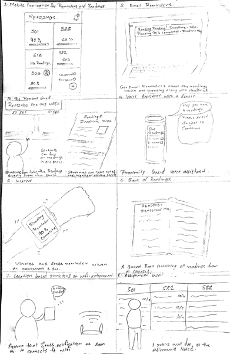
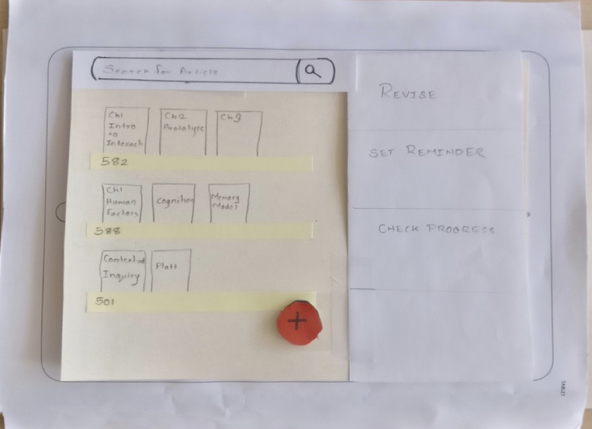
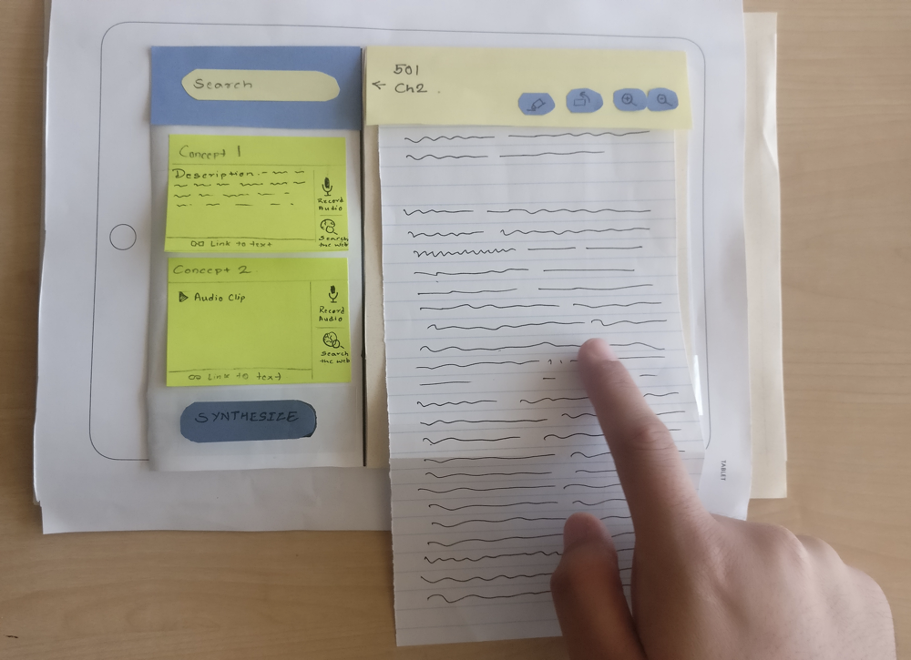

Flash Reader
| Duration: | 12 weeks |
| Role: | Interaction Designer |
Problem Statement
An average university student reads humongous amounts of text in the form of papers, books, articles and other forms during his tenure. Retention of this information has been a problem amongst students which leads to lesser recall during examinations and other applications. The major cause is information overload. The students are disorganized while writing notes. They are scribbled in multiple notebooks which also leads to students missing out on notes.
Process
Problem Definition
I chose the student community was the most accessible but also had a lot of problem areas. I chose it because I was a part of it which allowed me think about the problem more directly. It came with a few challenges as well as every student is different and thinks from a different perspective.
AT the start I reflected upon my own life as a student and found that the readings was a major problem area which desperately needed solutions. I was missing out on deadlines due to not keeping track of the readings and defined the problem as a need for reading reminders and progress tracking. This problem was confirmed by a few students in my class
Competitive Analysis
I conducted a competitive analysis based on the current applications on the internet which provided such features. There were applications which helped with the reminders while some tracked a user's reading progress of an article. Evernote was a close competitor but none of the students used it as it was viewed as an application for an entirely different purpose.
Design strategies
I was confused between choosing reflective design and participatory design as the design strategy. After some more research, it became clear that participatory design seemed to be a more natural choice when dealing with such a large and diverse community to understand the student problems and come up with design solutions.
Sketching
I brainstormed for different approaches to tackle the problem with various different tools and technologies and sketched out around 20 odd ideas in which the problem could be solved.

Storyboarding
I created a storyboard based on the different solutions which could be used in different scenarios. These scenarios helped me come up with more use cases for the application.

Personas
I developed 4 personas for the given problem and one anti-persona which would not need the solution at all. These personas were based on the people I had spoken to while discussing the problem.
User Review
At the second user review and 6 user interviews later, I found that problem of forgetting read was not the actual problem. A pattern was found in all the user interviews suggesting that retention of the information which is read is the major problem.
User Quotes:
I remember to read, But I can't remember what I read.
There is so much to read I don't know what I read!
I forget stuff the next day of the report submission.
I shifted the focus of the application from reminders to retention. The problem statement was changed to match the focus.
I spoke to the users again and validated my theory of retention being a more serious problem. I brainstormed for different ideas and sketched out a few which would help improve the retention and organize the notes.
Brainstorming and Sketching 2
While brainstorming with the users I came up with a few more ideas which would increase retention. I sketched them out and took user feedback on them. I developed a reader application which helps in retention. This application was developed for the Desktop and the Tablets as most of the users did not use their mobile phones for reading.
I sketched out the rough layout of the of the application and its major features. One of the major features was the flashcard note taking.
It was intuitive for the users to user flashcards to retain by revision. My application enforced the users to prepare their own flashcards while note taking. The users could highlight a part of a text and then create a flashcard based on it. This creation of flashcards by the user increased the retention by repetition. The user was filling in the information by himself thereby repeating it in his head and increasing retention.
Another feature was using voice notes with a title as flashcards. The core of this feature was also retention by repetition. The user recorded the explanation for a specific text making him retain it more by repeating it. He could use it later on as an audio track.
The last feature that was appreciated by the users was the wordcloud based on the highlighted text. After the reading completion, all the highlighted words would turn into a word cloud and the user would get the information about that word just by hovering over it.
System Description
The application contained 3 major screens
- The shelf - let the user add whichever files he wanted to add
- The reader - allowed the user to read, highlight and create flashcards
- The flashdeck - Used for revising the concepts.
QOC Analysis
There were more features like direct video search from the flashcards and compilation into a deck were added to the application design. A QOC analysis was done after the completing the previous phases. It was found that the flashcard feature was best and most feasible out of all the 3 main features.
Paper Prototype
A paper prototype was constructed and a usability test was conducted on the paper prototype. It was found that some features of the application like video search made it much complex and were trimmed off the application.
 
Digital Prototype
A clickable digital prototype was made and further critique was received on it. It was iterated a few times to get the final version. The color scheme was chosen to be bright and quirky so as to not bore the user while reading the article.
Final Deliverables
A clickable prototype with a submission report was submitted.
Final Prototype - Flash Reader